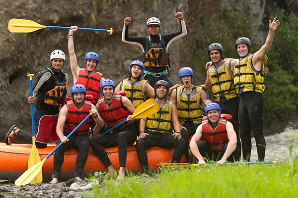

Rio Abaixo Rafting
Nossa missão é gerar emoções inesquecíveis conectando pessoas à natureza através de experiências seguras, emocionantes e inesquecíveis. Valorizamos a aventura com responsabilidade e respeito ao meio ambiente, trabalho em equipe e apreciação da natureza. Viva a energia das corredeiras com os melhores guias e um atendimento humanizado!
História

A Rio Abaixo Rafting começou com um pequeno grupo de apaixonados por rios e esportes ao ar livre. Com o tempo, reunimos guias qualificados, aprimoramos nossos equipamentos e construímos uma reputação baseada em segurança e diversão. Hoje, recebemos famílias, iniciantes e aventureiros experientes para explorar as melhores rotas de corredeiras da região. Trazendo a melhor sensação de aventura, alegria e memórias que a natureza pode nos conceder.